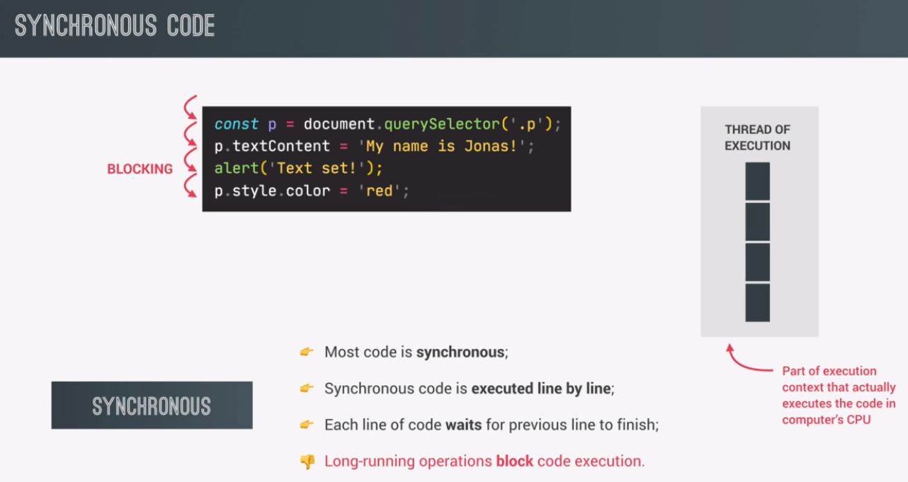
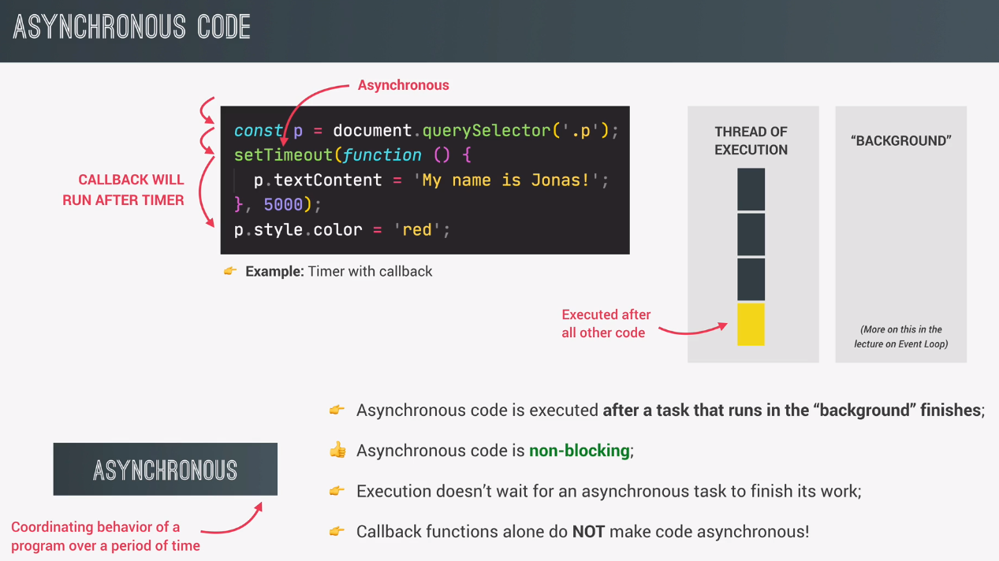
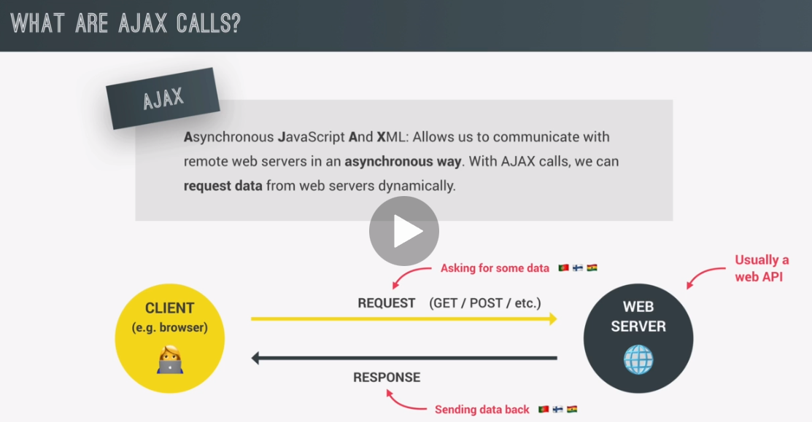

..........
synchronous simply means that the code is executed line by line, in the exact order of execution that we defined in our code,
as the first line of code is reached in the execution, it is simply executed in the execution of thread.
then the next line of code is executed and then the next one, all in sequence. So each line of code always waits for the previous line to finish execution.
this can create problems when one line of code takes a long time to run.
the first line of code is still synchronous here, and we also move to the second line in a synchronous way.
But here we encountered the set timeout function, which will basically start a timer in an asynchronous way.
So this means that the timer will essentially run in the background without preventing the main code from executing.
We also register a callback function, which will not be executed now, but only after the timer has finished running.
Asynchronous code is executed after a task that is running in the background finishes execution.
in this case, that is the timer.
This callback that we just talked about is registered, and then we immediately move on to the next line. So the main code is not being blocked and execution does not wait for the asynchronous timer to finish its work.
when the timer finally finishes after five seconds, the callback function will finally be executed as well. So you'll see that this callback runs after all the other code, even though in the code, it doesn't appear at the end. And so basically an action was deferred into the future here in order to make the code non-blocking.
Only certain functions such as set timeout work in an asynchronous way. We just have to know which ones do and which ones don't, okay?
Ajax stands for asynchronous JavaScript and XML, and basically it allows us to communicate with remote web servers in an asynchronous way.
when we're asking a server to send us some data, this server usually contains a web API. And this API is the one that has the data that we're asking for.
when building applications in practice, we simply call these online APIs, API, and many people will also call these APIs, Web APIs, or again, just simply API. So the term Online API is actually a term that I came up with myself because the term Web API is actually also used for other things.
GitHub.com list of APIs.
lkjlkjlkj
jlkjlkjlk